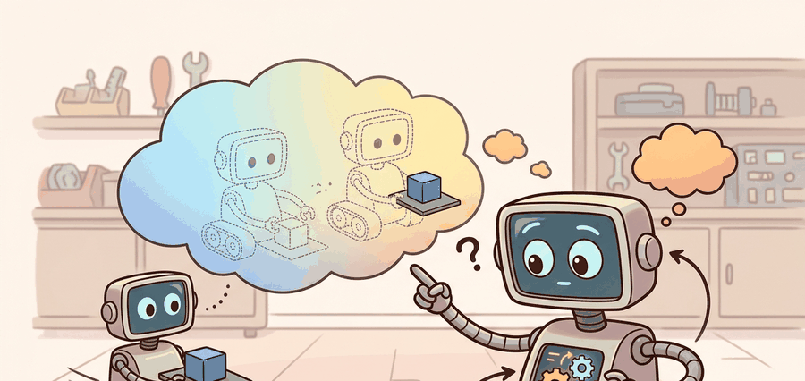

A forecast without uncertainty is just a confident guess with better typography.

Figure 36.4A: Uncertainty should widen where the model lacks data, where sensors are ambiguous, or where contact transitions amplify tiny state differences.
A Horizon-Aware Predictor
Big Picture
Embodied prediction needs uncertainty because the planner must decide not only what is likely, but also when the model should stop being trusted. In robotics, that trust boundary often matters more than squeezing out the last basis point of average prediction error.
Key Insight
The practical job of uncertainty is to change action selection or trigger a fallback. If uncertainty never alters behavior, it is only reporting, not decision support.
Aleatoric Versus Epistemic Uncertainty
A predictive model can report a distribution over next states, for example
The covariance may reflect irreducible environment noise, while disagreement across model ensemble members estimates epistemic uncertainty from limited or out-of-support data. A planner should react differently to the two: aleatoric noise may require robust costs, while epistemic uncertainty often calls for caution, exploration, or fallback control.
The distinction matters operationally. Aleatoric uncertainty usually remains high even after more data, because it belongs to the task itself: deformable packages vary, human partners move unpredictably, and wet floors slip. Epistemic uncertainty should shrink when the robot gathers matched data from the problematic regime. If a system keeps reporting high epistemic uncertainty after many demonstrations, that often points to poor state representation, stale calibration, or a model family that cannot express the relevant mode switch.
What The Planner Should Do
Uncertainty type
Typical cause
Planner response
Aleatoric
Stochastic contact, noisy sensing, human motion
Optimize expected or risk-sensitive cost over the noise
Epistemic
Little data, unseen states, model misspecification
Reduce trust, shorten horizon, gather data, or invoke a safe fallback
Worked Probe
This probe compares the mean and spread of a tiny ensemble of one-step predictions. It is not a full uncertainty method, but it exposes the exact statistic the planner would need to gate trust.
# Estimate ensemble mean and disagreement for a one-step rollout.
from statistics import mean, pstdev
ensemble_predictions = [0.48, 0.50, 0.51, 0.63]
mu = round(mean(ensemble_predictions), 3)
sigma = round(pstdev(ensemble_predictions), 3)
print({"ensemble_mean": mu, "ensemble_std": sigma, "members": ensemble_predictions})
Read the uncertainty output as a trigger for risk-aware action: high epistemic uncertainty should widen safety margins, ask for information-gathering behavior, or reject a plan whose predicted success depends on unknown dynamics.
Code Fragment 36.4.1: Three members agree tightly while one drifts. In a real planner, that disagreement is a signal to reduce confidence in the imagined future even if the mean still looks plausible.
Library Shortcut
Use ensemble bootstraps, probabilistic heads, or calibrated dropout only if the planning loop consumes their output. Save coverage metrics, negative log-likelihood, and safety-trigger counts alongside raw error so calibration can be audited later. PyTorch and JAX make the modeling easy; the hard part is plumbing the uncertainty into Nav2, MoveIt 2, or an MPC safety gate so high uncertainty actually changes behavior.
Calibration And Failure Modes
The most common failure is confident extrapolation. A small ensemble spread can appear precisely because all members were trained on the same narrow operating regime and share the same blind spot. Another failure is temporal mismatch: the uncertainty estimate is computed for the latent state before a new observation arrives, but the controller treats it as if it described the current physical state. In contact-rich tasks, that single stale frame can be enough to turn a cautious policy into a brittle one.
A practical calibration panel should therefore include both nominal and shifted conditions: new object materials, lighting changes for vision-conditioned models, altered contact friction, and delayed observations. If the interval coverage collapses under those matched perturbations, the uncertainty estimate is not yet a reliable control signal.
Calibration Rule
For each horizon, compare predicted interval coverage with empirical coverage on held-out rollouts. If the model says 90 percent intervals but covers only 50 percent of actual next states, the planner should treat those intervals as fiction.
Warning
Uncertainty estimates can become overconfident exactly where they are most needed, namely on out-of-distribution states. Never assume that a narrow interval means safety unless coverage was verified on a matched perturbation panel.
Practical Example
A quadruped stepping on mixed terrain may face genuine aleatoric slip variability, while a warehouse arm asked to manipulate a never-seen deformable package faces epistemic uncertainty. The first calls for robust contact costs; the second may justify slowing down, gathering data, or asking a human to intervene.
Cross-References
This section pairs naturally with Chapter 54 on safety, the ensemble modeling in Section 37.2, and state-estimation noise models in Chapter 8.
Research Frontier
Trust-aware model usage is active research. Recent model-based actor-critic methods explicitly weight model rollouts by confidence, and practical robotics systems increasingly log uncertainty-triggered overrides as first-class safety events rather than hidden debug metadata.
Self Check
Can you name a setting where high aleatoric uncertainty should not automatically stop the robot, and a setting where high epistemic uncertainty probably should?
Memory Hook
Prediction error says, "I was wrong." Uncertainty says, "I might be wrong, so plan accordingly."
Key Takeaway
Good uncertainty does not merely decorate a forecast. It changes which futures the planner trusts, which actions it chooses, and when it should back off.
Exercise
Choose one embodied task and define a calibration panel for it. What would count as acceptable interval coverage at horizons 1, 3, and 5?
Bibliography & Further Reading
Primary References And Tools
Reference Chua, K. et al.. "Deep Reinforcement Learning in a Handful of Trials using Probabilistic Dynamics Models." (2018). https://arxiv.org/abs/1805.12114
PETS is a canonical uncertainty-aware ensemble method for model-based RL.